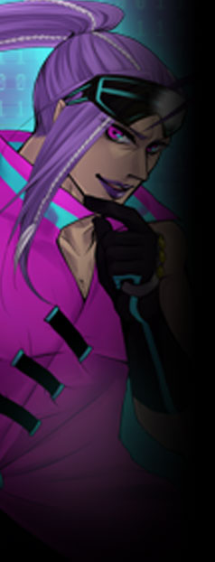

▼中層管理局【 スヴァリン 】
中層における治安維持や自治を目的とした管理局。
必要な情報の集約、インフラ整備を行う他、
かつてはライラックホームを拠点としていたが、 公式サイト原文
中層における治安維持や自治を目的とした管理局。
情報を集約する部署でもあり、
中層におけるＹＤＦやバスターライラックの総括、
かつてはライラックホームを拠点としていたが、 |
|
 |
ミルヴァ・メルトリア
|
||||||||||||||||||||
|
スヴァリン局長のオネエさん。
面倒見が良く、特に子供好き。
自身の重力を操作する【 グラヴィメトリア 】を持つサイキッカーで、
以前は異能主義者であったが、アリスとの出会いが彼を変えた。
「私はただ、あの子の願いを叶えてあげたいだけよ。」 |
|||||||||||||||||||||
公式サイト原文
ミルヴァ＝メルトリア
スヴァリン局長。
自身の重力を操作する【 グラヴィメトリア 】を持つサイキッカー。
身寄りのない子供には手を差し伸べる
おいたがすぎる子供には
元々情報収集に役立てていたBAR【 パープルアイズ 】の店長でもあり、
「私はただ、あの子の願いを叶えてあげたいだけよ。」 性能：基礎５ｐステータス＋ボス特性５ｐ |
|||||||||||||||||||||